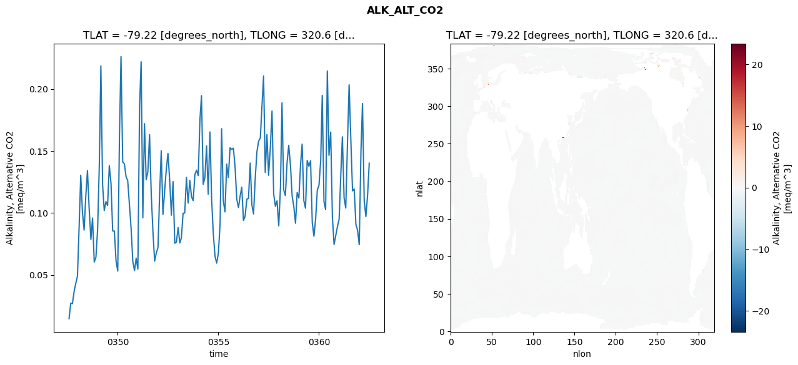
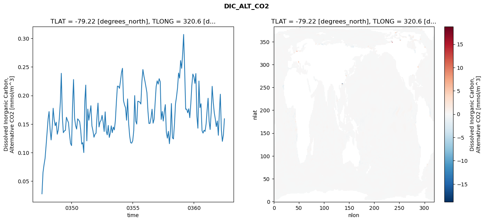
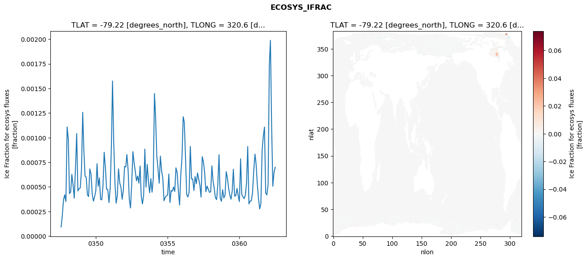
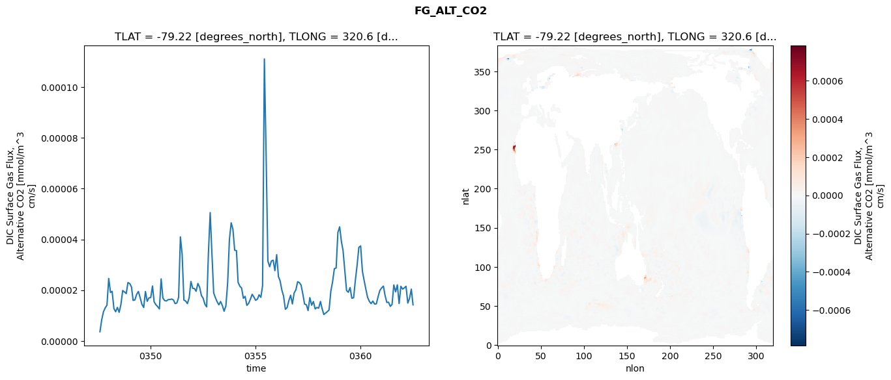

glb-dor_North_Atlantic_basin_015_1999-07-01_00062#
Simulation details#
Case: smyle.cdr-atlas-v0.glb-dor_North_Atlantic_basin_015_1999-07-01_00062.001
Basin: North_Atlantic_basin
Polygon: 15.0
Start date: 1999-07
Show code cell source Hide code cell source
import xarray as xr
import matplotlib.pyplot as plt
Show code cell source Hide code cell source
zarr_store = "/path/to/zarr/store"
# Parameters
zarr_store = "/global/cfs/projectdirs/m4746/Projects/Ocean-CDR-Atlas-v0/data/validation/smyle.cdr-atlas-v0.glb-dor_North_Atlantic_basin_015_1999-07-01_00062.001.validation.zarr"
Show code cell source Hide code cell source
%%time
ds_o = xr.open_zarr(zarr_store).compute()
ds_o
CPU times: user 585 ms, sys: 538 ms, total: 1.12 s
Wall time: 1.4 s
<xarray.Dataset> Size: 2MB
Dimensions: (nlat: 384, nlon: 320, time: 180)
Coordinates:
TLAT float64 8B -79.22
TLONG float64 8B 320.6
ULAT float64 8B -78.95
ULONG float64 8B 321.1
* time (time) object 1kB 0347-08-01 00:00:00 ... 0362-07-01 0...
z_t float32 4B 500.0
Dimensions without coordinates: nlat, nlon
Data variables:
ALK_ALT_CO2_diff (nlat, nlon) float32 492kB nan nan nan ... nan nan nan
ALK_ALT_CO2_rmse (time) float64 1kB 0.0147 0.02726 ... 0.1142 0.1401
DIC_ALT_CO2_diff (nlat, nlon) float32 492kB nan nan nan ... nan nan nan
DIC_ALT_CO2_rmse (time) float64 1kB 0.0278 0.06521 ... 0.1312 0.1592
ECOSYS_IFRAC_diff (nlat, nlon) float32 492kB nan nan nan ... nan nan nan
ECOSYS_IFRAC_rmse (time) float64 1kB 9.249e-05 0.0002146 ... 0.0007004
FG_ALT_CO2_diff (nlat, nlon) float32 492kB nan nan nan ... nan nan nan
FG_ALT_CO2_rmse (time) float64 1kB 3.612e-06 8.338e-06 ... 1.421e-05xarray.Dataset
- nlat: 384
- nlon: 320
- time: 180
- TLAT()float64-79.22
- long_name :
- array of t-grid latitudes
- units :
- degrees_north
array(-79.22052261)
- TLONG()float64320.6
- long_name :
- array of t-grid longitudes
- units :
- degrees_east
array(320.56250892)
- ULAT()float64-78.95
- long_name :
- array of u-grid latitudes
- units :
- degrees_north
array(-78.95289509)
- ULONG()float64321.1
- long_name :
- array of u-grid longitudes
- units :
- degrees_east
array(321.12500894)
- time(time)object0347-08-01 00:00:00 ... 0362-07-...
- bounds :
- time_bound
- long_name :
- time
array([cftime.DatetimeNoLeap(347, 8, 1, 0, 0, 0, 0, has_year_zero=True), cftime.DatetimeNoLeap(347, 9, 1, 0, 0, 0, 0, has_year_zero=True), cftime.DatetimeNoLeap(347, 10, 1, 0, 0, 0, 0, has_year_zero=True), cftime.DatetimeNoLeap(347, 11, 1, 0, 0, 0, 0, has_year_zero=True), cftime.DatetimeNoLeap(347, 12, 1, 0, 0, 0, 0, has_year_zero=True), cftime.DatetimeNoLeap(348, 1, 1, 0, 0, 0, 0, has_year_zero=True), cftime.DatetimeNoLeap(348, 2, 1, 0, 0, 0, 0, has_year_zero=True), cftime.DatetimeNoLeap(348, 3, 1, 0, 0, 0, 0, has_year_zero=True), cftime.DatetimeNoLeap(348, 4, 1, 0, 0, 0, 0, has_year_zero=True), cftime.DatetimeNoLeap(348, 5, 1, 0, 0, 0, 0, has_year_zero=True), cftime.DatetimeNoLeap(348, 6, 1, 0, 0, 0, 0, has_year_zero=True), cftime.DatetimeNoLeap(348, 7, 1, 0, 0, 0, 0, has_year_zero=True), cftime.DatetimeNoLeap(348, 8, 1, 0, 0, 0, 0, has_year_zero=True), cftime.DatetimeNoLeap(348, 9, 1, 0, 0, 0, 0, has_year_zero=True), cftime.DatetimeNoLeap(348, 10, 1, 0, 0, 0, 0, has_year_zero=True), cftime.DatetimeNoLeap(348, 11, 1, 0, 0, 0, 0, has_year_zero=True), cftime.DatetimeNoLeap(348, 12, 1, 0, 0, 0, 0, has_year_zero=True), cftime.DatetimeNoLeap(349, 1, 1, 0, 0, 0, 0, has_year_zero=True), cftime.DatetimeNoLeap(349, 2, 1, 0, 0, 0, 0, has_year_zero=True), cftime.DatetimeNoLeap(349, 3, 1, 0, 0, 0, 0, has_year_zero=True), cftime.DatetimeNoLeap(349, 4, 1, 0, 0, 0, 0, has_year_zero=True), cftime.DatetimeNoLeap(349, 5, 1, 0, 0, 0, 0, has_year_zero=True), cftime.DatetimeNoLeap(349, 6, 1, 0, 0, 0, 0, has_year_zero=True), cftime.DatetimeNoLeap(349, 7, 1, 0, 0, 0, 0, has_year_zero=True), cftime.DatetimeNoLeap(349, 8, 1, 0, 0, 0, 0, has_year_zero=True), cftime.DatetimeNoLeap(349, 9, 1, 0, 0, 0, 0, has_year_zero=True), cftime.DatetimeNoLeap(349, 10, 1, 0, 0, 0, 0, has_year_zero=True), cftime.DatetimeNoLeap(349, 11, 1, 0, 0, 0, 0, has_year_zero=True), cftime.DatetimeNoLeap(349, 12, 1, 0, 0, 0, 0, has_year_zero=True), cftime.DatetimeNoLeap(350, 1, 1, 0, 0, 0, 0, has_year_zero=True), cftime.DatetimeNoLeap(350, 2, 1, 0, 0, 0, 0, has_year_zero=True), cftime.DatetimeNoLeap(350, 3, 1, 0, 0, 0, 0, has_year_zero=True), cftime.DatetimeNoLeap(350, 4, 1, 0, 0, 0, 0, has_year_zero=True), cftime.DatetimeNoLeap(350, 5, 1, 0, 0, 0, 0, has_year_zero=True), cftime.DatetimeNoLeap(350, 6, 1, 0, 0, 0, 0, has_year_zero=True), cftime.DatetimeNoLeap(350, 7, 1, 0, 0, 0, 0, has_year_zero=True), cftime.DatetimeNoLeap(350, 8, 1, 0, 0, 0, 0, has_year_zero=True), cftime.DatetimeNoLeap(350, 9, 1, 0, 0, 0, 0, has_year_zero=True), cftime.DatetimeNoLeap(350, 10, 1, 0, 0, 0, 0, has_year_zero=True), cftime.DatetimeNoLeap(350, 11, 1, 0, 0, 0, 0, has_year_zero=True), cftime.DatetimeNoLeap(350, 12, 1, 0, 0, 0, 0, has_year_zero=True), cftime.DatetimeNoLeap(351, 1, 1, 0, 0, 0, 0, has_year_zero=True), cftime.DatetimeNoLeap(351, 2, 1, 0, 0, 0, 0, has_year_zero=True), cftime.DatetimeNoLeap(351, 3, 1, 0, 0, 0, 0, has_year_zero=True), cftime.DatetimeNoLeap(351, 4, 1, 0, 0, 0, 0, has_year_zero=True), cftime.DatetimeNoLeap(351, 5, 1, 0, 0, 0, 0, has_year_zero=True), cftime.DatetimeNoLeap(351, 6, 1, 0, 0, 0, 0, has_year_zero=True), cftime.DatetimeNoLeap(351, 7, 1, 0, 0, 0, 0, has_year_zero=True), cftime.DatetimeNoLeap(351, 8, 1, 0, 0, 0, 0, has_year_zero=True), cftime.DatetimeNoLeap(351, 9, 1, 0, 0, 0, 0, has_year_zero=True), cftime.DatetimeNoLeap(351, 10, 1, 0, 0, 0, 0, has_year_zero=True), cftime.DatetimeNoLeap(351, 11, 1, 0, 0, 0, 0, has_year_zero=True), cftime.DatetimeNoLeap(351, 12, 1, 0, 0, 0, 0, has_year_zero=True), cftime.DatetimeNoLeap(352, 1, 1, 0, 0, 0, 0, has_year_zero=True), cftime.DatetimeNoLeap(352, 2, 1, 0, 0, 0, 0, has_year_zero=True), cftime.DatetimeNoLeap(352, 3, 1, 0, 0, 0, 0, has_year_zero=True), cftime.DatetimeNoLeap(352, 4, 1, 0, 0, 0, 0, has_year_zero=True), cftime.DatetimeNoLeap(352, 5, 1, 0, 0, 0, 0, has_year_zero=True), cftime.DatetimeNoLeap(352, 6, 1, 0, 0, 0, 0, has_year_zero=True), cftime.DatetimeNoLeap(352, 7, 1, 0, 0, 0, 0, has_year_zero=True), cftime.DatetimeNoLeap(352, 8, 1, 0, 0, 0, 0, has_year_zero=True), cftime.DatetimeNoLeap(352, 9, 1, 0, 0, 0, 0, has_year_zero=True), cftime.DatetimeNoLeap(352, 10, 1, 0, 0, 0, 0, has_year_zero=True), cftime.DatetimeNoLeap(352, 11, 1, 0, 0, 0, 0, has_year_zero=True), cftime.DatetimeNoLeap(352, 12, 1, 0, 0, 0, 0, has_year_zero=True), cftime.DatetimeNoLeap(353, 1, 1, 0, 0, 0, 0, has_year_zero=True), cftime.DatetimeNoLeap(353, 2, 1, 0, 0, 0, 0, has_year_zero=True), cftime.DatetimeNoLeap(353, 3, 1, 0, 0, 0, 0, has_year_zero=True), cftime.DatetimeNoLeap(353, 4, 1, 0, 0, 0, 0, has_year_zero=True), cftime.DatetimeNoLeap(353, 5, 1, 0, 0, 0, 0, has_year_zero=True), cftime.DatetimeNoLeap(353, 6, 1, 0, 0, 0, 0, has_year_zero=True), cftime.DatetimeNoLeap(353, 7, 1, 0, 0, 0, 0, has_year_zero=True), cftime.DatetimeNoLeap(353, 8, 1, 0, 0, 0, 0, has_year_zero=True), cftime.DatetimeNoLeap(353, 9, 1, 0, 0, 0, 0, has_year_zero=True), cftime.DatetimeNoLeap(353, 10, 1, 0, 0, 0, 0, has_year_zero=True), cftime.DatetimeNoLeap(353, 11, 1, 0, 0, 0, 0, has_year_zero=True), cftime.DatetimeNoLeap(353, 12, 1, 0, 0, 0, 0, has_year_zero=True), cftime.DatetimeNoLeap(354, 1, 1, 0, 0, 0, 0, has_year_zero=True), cftime.DatetimeNoLeap(354, 2, 1, 0, 0, 0, 0, has_year_zero=True), cftime.DatetimeNoLeap(354, 3, 1, 0, 0, 0, 0, has_year_zero=True), cftime.DatetimeNoLeap(354, 4, 1, 0, 0, 0, 0, has_year_zero=True), cftime.DatetimeNoLeap(354, 5, 1, 0, 0, 0, 0, has_year_zero=True), cftime.DatetimeNoLeap(354, 6, 1, 0, 0, 0, 0, has_year_zero=True), cftime.DatetimeNoLeap(354, 7, 1, 0, 0, 0, 0, has_year_zero=True), cftime.DatetimeNoLeap(354, 8, 1, 0, 0, 0, 0, has_year_zero=True), cftime.DatetimeNoLeap(354, 9, 1, 0, 0, 0, 0, has_year_zero=True), cftime.DatetimeNoLeap(354, 10, 1, 0, 0, 0, 0, has_year_zero=True), cftime.DatetimeNoLeap(354, 11, 1, 0, 0, 0, 0, has_year_zero=True), cftime.DatetimeNoLeap(354, 12, 1, 0, 0, 0, 0, has_year_zero=True), cftime.DatetimeNoLeap(355, 1, 1, 0, 0, 0, 0, has_year_zero=True), cftime.DatetimeNoLeap(355, 2, 1, 0, 0, 0, 0, has_year_zero=True), cftime.DatetimeNoLeap(355, 3, 1, 0, 0, 0, 0, has_year_zero=True), cftime.DatetimeNoLeap(355, 4, 1, 0, 0, 0, 0, has_year_zero=True), cftime.DatetimeNoLeap(355, 5, 1, 0, 0, 0, 0, has_year_zero=True), cftime.DatetimeNoLeap(355, 6, 1, 0, 0, 0, 0, has_year_zero=True), cftime.DatetimeNoLeap(355, 7, 1, 0, 0, 0, 0, has_year_zero=True), cftime.DatetimeNoLeap(355, 8, 1, 0, 0, 0, 0, has_year_zero=True), cftime.DatetimeNoLeap(355, 9, 1, 0, 0, 0, 0, has_year_zero=True), cftime.DatetimeNoLeap(355, 10, 1, 0, 0, 0, 0, has_year_zero=True), cftime.DatetimeNoLeap(355, 11, 1, 0, 0, 0, 0, has_year_zero=True), cftime.DatetimeNoLeap(355, 12, 1, 0, 0, 0, 0, has_year_zero=True), cftime.DatetimeNoLeap(356, 1, 1, 0, 0, 0, 0, has_year_zero=True), cftime.DatetimeNoLeap(356, 2, 1, 0, 0, 0, 0, has_year_zero=True), cftime.DatetimeNoLeap(356, 3, 1, 0, 0, 0, 0, has_year_zero=True), cftime.DatetimeNoLeap(356, 4, 1, 0, 0, 0, 0, has_year_zero=True), cftime.DatetimeNoLeap(356, 5, 1, 0, 0, 0, 0, has_year_zero=True), cftime.DatetimeNoLeap(356, 6, 1, 0, 0, 0, 0, has_year_zero=True), cftime.DatetimeNoLeap(356, 7, 1, 0, 0, 0, 0, has_year_zero=True), cftime.DatetimeNoLeap(356, 8, 1, 0, 0, 0, 0, has_year_zero=True), cftime.DatetimeNoLeap(356, 9, 1, 0, 0, 0, 0, has_year_zero=True), cftime.DatetimeNoLeap(356, 10, 1, 0, 0, 0, 0, has_year_zero=True), cftime.DatetimeNoLeap(356, 11, 1, 0, 0, 0, 0, has_year_zero=True), cftime.DatetimeNoLeap(356, 12, 1, 0, 0, 0, 0, has_year_zero=True), cftime.DatetimeNoLeap(357, 1, 1, 0, 0, 0, 0, has_year_zero=True), cftime.DatetimeNoLeap(357, 2, 1, 0, 0, 0, 0, has_year_zero=True), cftime.DatetimeNoLeap(357, 3, 1, 0, 0, 0, 0, has_year_zero=True), cftime.DatetimeNoLeap(357, 4, 1, 0, 0, 0, 0, has_year_zero=True), cftime.DatetimeNoLeap(357, 5, 1, 0, 0, 0, 0, has_year_zero=True), cftime.DatetimeNoLeap(357, 6, 1, 0, 0, 0, 0, has_year_zero=True), cftime.DatetimeNoLeap(357, 7, 1, 0, 0, 0, 0, has_year_zero=True), cftime.DatetimeNoLeap(357, 8, 1, 0, 0, 0, 0, has_year_zero=True), cftime.DatetimeNoLeap(357, 9, 1, 0, 0, 0, 0, has_year_zero=True), cftime.DatetimeNoLeap(357, 10, 1, 0, 0, 0, 0, has_year_zero=True), cftime.DatetimeNoLeap(357, 11, 1, 0, 0, 0, 0, has_year_zero=True), cftime.DatetimeNoLeap(357, 12, 1, 0, 0, 0, 0, has_year_zero=True), cftime.DatetimeNoLeap(358, 1, 1, 0, 0, 0, 0, has_year_zero=True), cftime.DatetimeNoLeap(358, 2, 1, 0, 0, 0, 0, has_year_zero=True), cftime.DatetimeNoLeap(358, 3, 1, 0, 0, 0, 0, has_year_zero=True), cftime.DatetimeNoLeap(358, 4, 1, 0, 0, 0, 0, has_year_zero=True), cftime.DatetimeNoLeap(358, 5, 1, 0, 0, 0, 0, has_year_zero=True), cftime.DatetimeNoLeap(358, 6, 1, 0, 0, 0, 0, has_year_zero=True), cftime.DatetimeNoLeap(358, 7, 1, 0, 0, 0, 0, has_year_zero=True), cftime.DatetimeNoLeap(358, 8, 1, 0, 0, 0, 0, has_year_zero=True), cftime.DatetimeNoLeap(358, 9, 1, 0, 0, 0, 0, has_year_zero=True), cftime.DatetimeNoLeap(358, 10, 1, 0, 0, 0, 0, has_year_zero=True), cftime.DatetimeNoLeap(358, 11, 1, 0, 0, 0, 0, has_year_zero=True), cftime.DatetimeNoLeap(358, 12, 1, 0, 0, 0, 0, has_year_zero=True), cftime.DatetimeNoLeap(359, 1, 1, 0, 0, 0, 0, has_year_zero=True), cftime.DatetimeNoLeap(359, 2, 1, 0, 0, 0, 0, has_year_zero=True), cftime.DatetimeNoLeap(359, 3, 1, 0, 0, 0, 0, has_year_zero=True), cftime.DatetimeNoLeap(359, 4, 1, 0, 0, 0, 0, has_year_zero=True), cftime.DatetimeNoLeap(359, 5, 1, 0, 0, 0, 0, has_year_zero=True), cftime.DatetimeNoLeap(359, 6, 1, 0, 0, 0, 0, has_year_zero=True), cftime.DatetimeNoLeap(359, 7, 1, 0, 0, 0, 0, has_year_zero=True), cftime.DatetimeNoLeap(359, 8, 1, 0, 0, 0, 0, has_year_zero=True), cftime.DatetimeNoLeap(359, 9, 1, 0, 0, 0, 0, has_year_zero=True), cftime.DatetimeNoLeap(359, 10, 1, 0, 0, 0, 0, has_year_zero=True), cftime.DatetimeNoLeap(359, 11, 1, 0, 0, 0, 0, has_year_zero=True), cftime.DatetimeNoLeap(359, 12, 1, 0, 0, 0, 0, has_year_zero=True), cftime.DatetimeNoLeap(360, 1, 1, 0, 0, 0, 0, has_year_zero=True), cftime.DatetimeNoLeap(360, 2, 1, 0, 0, 0, 0, has_year_zero=True), cftime.DatetimeNoLeap(360, 3, 1, 0, 0, 0, 0, has_year_zero=True), cftime.DatetimeNoLeap(360, 4, 1, 0, 0, 0, 0, has_year_zero=True), cftime.DatetimeNoLeap(360, 5, 1, 0, 0, 0, 0, has_year_zero=True), cftime.DatetimeNoLeap(360, 6, 1, 0, 0, 0, 0, has_year_zero=True), cftime.DatetimeNoLeap(360, 7, 1, 0, 0, 0, 0, has_year_zero=True), cftime.DatetimeNoLeap(360, 8, 1, 0, 0, 0, 0, has_year_zero=True), cftime.DatetimeNoLeap(360, 9, 1, 0, 0, 0, 0, has_year_zero=True), cftime.DatetimeNoLeap(360, 10, 1, 0, 0, 0, 0, has_year_zero=True), cftime.DatetimeNoLeap(360, 11, 1, 0, 0, 0, 0, has_year_zero=True), cftime.DatetimeNoLeap(360, 12, 1, 0, 0, 0, 0, has_year_zero=True), cftime.DatetimeNoLeap(361, 1, 1, 0, 0, 0, 0, has_year_zero=True), cftime.DatetimeNoLeap(361, 2, 1, 0, 0, 0, 0, has_year_zero=True), cftime.DatetimeNoLeap(361, 3, 1, 0, 0, 0, 0, has_year_zero=True), cftime.DatetimeNoLeap(361, 4, 1, 0, 0, 0, 0, has_year_zero=True), cftime.DatetimeNoLeap(361, 5, 1, 0, 0, 0, 0, has_year_zero=True), cftime.DatetimeNoLeap(361, 6, 1, 0, 0, 0, 0, has_year_zero=True), cftime.DatetimeNoLeap(361, 7, 1, 0, 0, 0, 0, has_year_zero=True), cftime.DatetimeNoLeap(361, 8, 1, 0, 0, 0, 0, has_year_zero=True), cftime.DatetimeNoLeap(361, 9, 1, 0, 0, 0, 0, has_year_zero=True), cftime.DatetimeNoLeap(361, 10, 1, 0, 0, 0, 0, has_year_zero=True), cftime.DatetimeNoLeap(361, 11, 1, 0, 0, 0, 0, has_year_zero=True), cftime.DatetimeNoLeap(361, 12, 1, 0, 0, 0, 0, has_year_zero=True), cftime.DatetimeNoLeap(362, 1, 1, 0, 0, 0, 0, has_year_zero=True), cftime.DatetimeNoLeap(362, 2, 1, 0, 0, 0, 0, has_year_zero=True), cftime.DatetimeNoLeap(362, 3, 1, 0, 0, 0, 0, has_year_zero=True), cftime.DatetimeNoLeap(362, 4, 1, 0, 0, 0, 0, has_year_zero=True), cftime.DatetimeNoLeap(362, 5, 1, 0, 0, 0, 0, has_year_zero=True), cftime.DatetimeNoLeap(362, 6, 1, 0, 0, 0, 0, has_year_zero=True), cftime.DatetimeNoLeap(362, 7, 1, 0, 0, 0, 0, has_year_zero=True)], dtype=object) - z_t()float32500.0
- long_name :
- depth from surface to midpoint of layer
- positive :
- down
- units :
- centimeters
- valid_max :
- 537500.0
- valid_min :
- 500.0
array(500., dtype=float32)
- ALK_ALT_CO2_diff(nlat, nlon)float32nan nan nan nan ... nan nan nan nan
- cell_methods :
- time: mean
- grid_loc :
- 3111
- long_name :
- Alkalinity, Alternative CO2
- units :
- meq/m^3
array([[ nan, nan, nan, ..., nan, nan, nan], [ nan, nan, nan, ..., nan, nan, nan], [-0.00488281, -0.00927734, 0.00488281, ..., nan, nan, nan], ..., [ nan, nan, nan, ..., nan, nan, nan], [ nan, nan, nan, ..., nan, nan, nan], [ nan, nan, nan, ..., nan, nan, nan]], dtype=float32) - ALK_ALT_CO2_rmse(time)float640.0147 0.02726 ... 0.1142 0.1401
- cell_methods :
- time: mean
- grid_loc :
- 3111
- long_name :
- Alkalinity, Alternative CO2
- units :
- meq/m^3
array([0.01470177, 0.02726012, 0.02673587, 0.03668289, 0.04309004, 0.04916571, 0.09054811, 0.13046978, 0.10052412, 0.08618067, 0.11382497, 0.13413518, 0.10316222, 0.07861706, 0.09588139, 0.06036761, 0.06417107, 0.0865803 , 0.13895838, 0.21862077, 0.12321093, 0.10196236, 0.10911828, 0.10603382, 0.13816092, 0.12388086, 0.08544855, 0.08534599, 0.06141845, 0.05305798, 0.16141522, 0.22609591, 0.14106138, 0.13968734, 0.12921392, 0.12596031, 0.10663143, 0.08712915, 0.06097434, 0.05345912, 0.06348312, 0.05467417, 0.18596309, 0.22193248, 0.09598615, 0.17207586, 0.1268033 , 0.13314022, 0.16309332, 0.11475182, 0.08517803, 0.06111569, 0.06766426, 0.07211095, 0.11695117, 0.15012593, 0.09876037, 0.11747575, 0.13529071, 0.1480127 , 0.12643603, 0.09820776, 0.12531397, 0.07556805, 0.07646133, 0.08821244, 0.07574784, 0.07989955, 0.09969974, 0.09995136, 0.1285997 , 0.10797348, 0.12628532, 0.11303023, 0.10993319, 0.13079952, 0.1344704 , 0.13010026, 0.17550002, 0.19462044, 0.12309145, 0.1282427 , 0.15402388, 0.11514232, 0.16529231, 0.11070213, 0.08334533, 0.06511353, 0.05949139, 0.06746391, 0.09116185, 0.1679302 , 0.10974789, 0.10088741, 0.13932353, 0.12867536, 0.15257488, 0.15116956, 0.1522376 , 0.13616949, 0.11092439, 0.10426887, 0.11407022, 0.12069999, 0.09393371, 0.0973967 , 0.11105326, 0.11170917, 0.14026306, 0.10638411, 0.09916026, 0.12827605, 0.14940268, 0.15797467, 0.16050807, 0.18476393, 0.21049226, 0.13270605, 0.16318613, 0.13037551, 0.15225287, 0.18217877, 0.11524788, 0.10535783, 0.10975116, 0.08955066, 0.12049065, 0.18883998, 0.11868763, 0.11404608, 0.14058827, 0.15453746, 0.13886119, 0.11346267, 0.10526548, 0.09167958, 0.11648711, 0.11199404, 0.13939428, 0.1554887 , 0.10998746, 0.10378623, 0.1423715 , 0.13755159, 0.14208243, 0.09197502, 0.08117131, 0.09510061, 0.11836835, 0.122328 , 0.14246886, 0.19484177, 0.10925094, 0.10268615, 0.21451835, 0.14644795, 0.16523997, 0.09659038, 0.07454222, 0.08169276, 0.08886054, 0.09494794, 0.13166603, 0.16138331, 0.11218181, 0.10391383, 0.1557035 , 0.20332419, 0.15960581, 0.11778482, 0.11936963, 0.09083782, 0.08606344, 0.07442289, 0.15005334, 0.18823677, 0.10975744, 0.0970141 , 0.11419603, 0.14008911]) - DIC_ALT_CO2_diff(nlat, nlon)float32nan nan nan nan ... nan nan nan nan
- cell_methods :
- time: mean
- grid_loc :
- 3111
- long_name :
- Dissolved Inorganic Carbon, Alternative CO2
- units :
- mmol/m^3
array([[ nan, nan, nan, ..., nan, nan, nan], [ nan, nan, nan, ..., nan, nan, nan], [-0.01171875, -0.01123047, -0.00683594, ..., nan, nan, nan], ..., [ nan, nan, nan, ..., nan, nan, nan], [ nan, nan, nan, ..., nan, nan, nan], [ nan, nan, nan, ..., nan, nan, nan]], dtype=float32) - DIC_ALT_CO2_rmse(time)float640.0278 0.06521 ... 0.1312 0.1592
- cell_methods :
- time: mean
- grid_loc :
- 3111
- long_name :
- Dissolved Inorganic Carbon, Alternative CO2
- units :
- mmol/m^3
array([0.02779663, 0.06520817, 0.07848098, 0.08968205, 0.11155989, 0.13575512, 0.15958596, 0.17189008, 0.14033078, 0.12218616, 0.14360308, 0.17769862, 0.15745176, 0.14707586, 0.1531875 , 0.13222434, 0.13992349, 0.16001701, 0.18841021, 0.23891197, 0.16309697, 0.13484332, 0.13808093, 0.13886392, 0.16192725, 0.15667779, 0.15254294, 0.13221129, 0.11631248, 0.11221192, 0.18457383, 0.22804366, 0.16049591, 0.1476018 , 0.1411605 , 0.15911445, 0.15713204, 0.15409416, 0.13930442, 0.11488279, 0.11742141, 0.10004396, 0.19106505, 0.218287 , 0.12056477, 0.17629539, 0.15673547, 0.16933797, 0.182194 , 0.14679024, 0.13828171, 0.12692362, 0.13220888, 0.13396932, 0.16474512, 0.18668363, 0.14491859, 0.15378492, 0.15654209, 0.16531162, 0.15315867, 0.13695074, 0.17140492, 0.13788924, 0.13106209, 0.14761026, 0.12656416, 0.1338171 , 0.14686655, 0.13495147, 0.1447078 , 0.13972962, 0.15581262, 0.1889518 , 0.21635557, 0.21623984, 0.21252596, 0.22553725, 0.2404701 , 0.24772393, 0.19112409, 0.18365802, 0.17839027, 0.15668771, 0.194077 , 0.1515334 , 0.12978121, 0.11733312, 0.11651174, 0.1207047 , 0.13838696, 0.19988515, 0.15521049, 0.1499429 , 0.18996979, 0.1895498 , 0.18820811, 0.18507014, 0.22407622, 0.2455611 , 0.23412858, 0.22498669, 0.21477254, 0.20492146, 0.17216785, 0.15097026, 0.15128096, 0.16076807, 0.17605588, 0.15152526, 0.15826906, 0.18779224, 0.21536733, 0.22575211, 0.21990868, 0.22949038, 0.22430103, 0.15808774, 0.17199751, 0.15532513, 0.17151256, 0.18406278, 0.13578351, 0.12530063, 0.13725521, 0.11561425, 0.13711748, 0.18601943, 0.12596777, 0.12393203, 0.15043542, 0.18532059, 0.19787335, 0.21379917, 0.23942546, 0.23041261, 0.26124742, 0.24763414, 0.2738194 , 0.30701807, 0.24445773, 0.17599626, 0.17616017, 0.16965978, 0.17677745, 0.16112154, 0.18557856, 0.2177102 , 0.23764739, 0.23286841, 0.22128982, 0.238493 , 0.16362013, 0.14273216, 0.2254039 , 0.17876899, 0.18565607, 0.13845116, 0.13414036, 0.13917933, 0.13718345, 0.15038446, 0.17494116, 0.19524686, 0.15464907, 0.14044117, 0.17020407, 0.21612737, 0.18902325, 0.17003172, 0.15928187, 0.14557311, 0.15543572, 0.13028188, 0.17199102, 0.20230219, 0.1396612 , 0.11968131, 0.13119137, 0.15923842]) - ECOSYS_IFRAC_diff(nlat, nlon)float32nan nan nan nan ... nan nan nan nan
- cell_methods :
- time: mean
- grid_loc :
- 2110
- long_name :
- Ice Fraction for ecosys fluxes
- units :
- fraction
array([[ nan, nan, nan, ..., nan, nan, nan], [ nan, nan, nan, ..., nan, nan, nan], [3.1590462e-06, 2.8252602e-05, 1.1086464e-05, ..., nan, nan, nan], ..., [ nan, nan, nan, ..., nan, nan, nan], [ nan, nan, nan, ..., nan, nan, nan], [ nan, nan, nan, ..., nan, nan, nan]], dtype=float32) - ECOSYS_IFRAC_rmse(time)float649.249e-05 0.0002146 ... 0.0007004
- cell_methods :
- time: mean
- grid_loc :
- 2110
- long_name :
- Ice Fraction for ecosys fluxes
- units :
- fraction
array([9.24926917e-05, 2.14627842e-04, 3.67515266e-04, 4.19484549e-04, 3.50564810e-04, 1.10928957e-03, 9.78745472e-04, 4.32182281e-04, 4.48364810e-04, 6.26946848e-04, 5.18218258e-04, 3.84759197e-04, 6.85208492e-04, 1.04239995e-03, 4.58520854e-04, 4.82807729e-04, 4.89175228e-04, 6.75712043e-04, 1.25783621e-03, 8.82163853e-04, 6.09650357e-04, 5.99461002e-04, 4.18628933e-04, 4.02678212e-04, 6.82434609e-04, 6.26692379e-04, 4.26708803e-04, 3.54675242e-04, 4.00196028e-04, 4.62278335e-04, 7.35469810e-04, 5.05153252e-04, 5.90564000e-04, 3.73323460e-04, 3.68076410e-04, 5.09492283e-04, 8.52046360e-04, 6.94728337e-04, 4.75859054e-04, 4.73384110e-04, 3.40314193e-04, 4.85912710e-04, 9.26129796e-04, 1.57532941e-03, 9.51344726e-04, 5.46301326e-04, 3.34802369e-04, 4.10667936e-04, 6.82703326e-04, 5.38826914e-04, 4.96458359e-04, 3.73690821e-04, 4.67096376e-04, 7.07533286e-04, 7.02422136e-04, 8.29520402e-04, 6.71858019e-04, 3.76938231e-04, 2.85225845e-04, 5.21309799e-04, 8.57687328e-04, 7.44197940e-04, 6.57388001e-04, 5.61663149e-04, 6.10574866e-04, 5.37989583e-04, 7.12618729e-04, 4.07532512e-04, 3.26787374e-04, 4.12399460e-04, 8.83579783e-04, 4.97840464e-04, 7.28299116e-04, 5.51346345e-04, 4.39994141e-04, 5.84153924e-04, 4.45960278e-04, 5.80179864e-04, 1.44809188e-03, 1.21167525e-03, ... 6.19340485e-04, 7.95539521e-04, 1.21269234e-03, 1.15834338e-03, 7.94412095e-04, 4.21668129e-04, 3.97498870e-04, 4.43944487e-04, 9.11638291e-04, 5.80071205e-04, 5.81051702e-04, 4.63568532e-04, 6.05423446e-04, 5.32218047e-04, 6.41176968e-04, 5.81900523e-04, 5.18138747e-04, 3.95950039e-04, 8.07099074e-04, 7.51745640e-04, 6.41939634e-04, 4.50882763e-04, 5.08331314e-04, 4.75989764e-04, 4.44416064e-04, 4.50404315e-04, 7.13983408e-04, 5.65053831e-04, 4.85962105e-04, 3.89572997e-04, 3.70911622e-04, 5.22760974e-04, 8.26401658e-04, 3.84347112e-04, 3.53342676e-04, 4.71747915e-04, 3.87776142e-04, 4.15952862e-04, 6.55532317e-04, 5.93689854e-04, 4.88432479e-04, 4.19646239e-04, 3.74711056e-04, 4.52196781e-04, 6.79619871e-04, 4.06606351e-04, 4.08843630e-04, 4.83522258e-04, 4.11667643e-04, 3.50380490e-04, 7.85063769e-04, 4.25416086e-04, 4.00376328e-04, 3.80822768e-04, 4.14762199e-04, 5.33705249e-04, 9.10427622e-04, 3.26766863e-04, 3.55142292e-04, 3.59444035e-04, 4.40425623e-04, 6.65718644e-04, 8.32872537e-04, 7.35730331e-04, 5.29389282e-04, 3.84077279e-04, 2.75865933e-04, 3.27810043e-04, 8.63444777e-04, 1.01541480e-03, 1.10812716e-03, 4.36157218e-04, 4.18660831e-04, 5.25926911e-04, 1.73525677e-03, 1.98907359e-03, 1.10882687e-03, 5.06532590e-04, 6.47931861e-04, 7.00390065e-04]) - FG_ALT_CO2_diff(nlat, nlon)float32nan nan nan nan ... nan nan nan nan
- cell_methods :
- time: mean
- grid_loc :
- 2110
- long_name :
- DIC Surface Gas Flux, Alternative CO2
- units :
- mmol/m^3 cm/s
array([[ nan, nan, nan, ..., nan, nan, nan], [ nan, nan, nan, ..., nan, nan, nan], [ 6.7393557e-09, 2.6564067e-09, -6.3663350e-09, ..., nan, nan, nan], ..., [ nan, nan, nan, ..., nan, nan, nan], [ nan, nan, nan, ..., nan, nan, nan], [ nan, nan, nan, ..., nan, nan, nan]], dtype=float32) - FG_ALT_CO2_rmse(time)float643.612e-06 8.338e-06 ... 1.421e-05
- cell_methods :
- time: mean
- grid_loc :
- 2110
- long_name :
- DIC Surface Gas Flux, Alternative CO2
- units :
- mmol/m^3 cm/s
array([3.61163005e-06, 8.33754887e-06, 1.14596531e-05, 1.30569329e-05, 1.40703035e-05, 2.46013973e-05, 1.90939986e-05, 1.95341610e-05, 1.27700366e-05, 1.14924663e-05, 1.31980716e-05, 1.12580337e-05, 1.43776615e-05, 1.98508679e-05, 1.93143323e-05, 1.86528080e-05, 2.29786366e-05, 2.26093131e-05, 2.12068208e-05, 1.59476356e-05, 1.61620719e-05, 1.83220556e-05, 1.94897174e-05, 1.70568443e-05, 1.44041404e-05, 1.31613793e-05, 1.94656520e-05, 1.55921178e-05, 1.69463680e-05, 1.70590612e-05, 2.16454158e-05, 1.54156524e-05, 1.42842093e-05, 1.35198667e-05, 1.26034125e-05, 2.44327736e-05, 1.68563561e-05, 1.58791401e-05, 1.57370453e-05, 1.62724026e-05, 1.63275048e-05, 1.65000006e-05, 1.61226686e-05, 1.47014435e-05, 1.49536557e-05, 1.71698684e-05, 4.09881969e-05, 3.41979951e-05, 1.60992903e-05, 1.57183317e-05, 1.46980947e-05, 1.70727073e-05, 2.34418612e-05, 2.07322272e-05, 2.06281935e-05, 1.95490445e-05, 2.26492824e-05, 2.11773641e-05, 1.79246152e-05, 1.68472503e-05, 1.44449913e-05, 1.34010235e-05, 3.44340921e-05, 5.05602971e-05, 3.44485215e-05, 1.88764310e-05, 1.69388377e-05, 1.54653116e-05, 1.42238771e-05, 1.55229552e-05, 1.38847256e-05, 1.16992788e-05, 1.38078486e-05, 2.29753451e-05, 3.98942247e-05, 4.65475161e-05, 4.40375115e-05, 3.56970421e-05, 3.55880493e-05, 2.30781203e-05, ... 2.76805797e-05, 3.39800611e-05, 2.53035566e-05, 2.37303300e-05, 2.00083821e-05, 1.76658753e-05, 1.24660430e-05, 1.31258002e-05, 1.58935602e-05, 1.80169235e-05, 1.45641574e-05, 1.89190724e-05, 2.01334714e-05, 2.33368394e-05, 2.29313753e-05, 2.20253972e-05, 1.84572003e-05, 1.45244831e-05, 1.42561380e-05, 1.19723779e-05, 1.70592225e-05, 1.40709720e-05, 1.55371290e-05, 1.26165618e-05, 1.31817825e-05, 1.28996492e-05, 1.55424136e-05, 1.28038254e-05, 1.03995565e-05, 1.09483052e-05, 1.15258508e-05, 1.22340536e-05, 1.96006389e-05, 2.34502950e-05, 2.84473984e-05, 2.87437025e-05, 4.26792039e-05, 4.49658684e-05, 3.90691674e-05, 3.56392801e-05, 2.76937642e-05, 1.98538820e-05, 1.91671246e-05, 2.10270381e-05, 1.68113496e-05, 1.70198515e-05, 2.38603391e-05, 2.99272464e-05, 3.68811739e-05, 3.74225977e-05, 2.73927754e-05, 2.40123391e-05, 2.04556748e-05, 1.72300439e-05, 1.55996860e-05, 1.46943910e-05, 1.56992310e-05, 1.45121507e-05, 1.46061650e-05, 1.74723581e-05, 1.98986597e-05, 2.08947155e-05, 2.15958544e-05, 1.79807396e-05, 1.51746466e-05, 1.52320527e-05, 1.36191999e-05, 1.43551352e-05, 2.20625623e-05, 1.93227247e-05, 2.20910304e-05, 1.47265233e-05, 2.15237897e-05, 2.04180041e-05, 2.09190123e-05, 2.15349295e-05, 1.49073762e-05, 1.67532007e-05, 2.04009304e-05, 1.42140834e-05])
- timePandasIndex
PandasIndex(CFTimeIndex([0347-08-01 00:00:00, 0347-09-01 00:00:00, 0347-10-01 00:00:00, 0347-11-01 00:00:00, 0347-12-01 00:00:00, 0348-01-01 00:00:00, 0348-02-01 00:00:00, 0348-03-01 00:00:00, 0348-04-01 00:00:00, 0348-05-01 00:00:00, ... 0361-10-01 00:00:00, 0361-11-01 00:00:00, 0361-12-01 00:00:00, 0362-01-01 00:00:00, 0362-02-01 00:00:00, 0362-03-01 00:00:00, 0362-04-01 00:00:00, 0362-05-01 00:00:00, 0362-06-01 00:00:00, 0362-07-01 00:00:00], dtype='object', length=180, calendar='noleap', freq='MS'))
Show code cell source Hide code cell source
variables = [v[:-5] for v in ds_o.variables if "_rmse" in v]
Show code cell source Hide code cell source
plt.rcParams.update({'figure.max_open_warning': 0})
for v in variables:
fig, axs = plt.subplots(1, 2, figsize=(15, 6))
ds_o[f"{v}_rmse"].plot(ax=axs[0])
ds_o[f"{v}_diff"].plot(ax=axs[1])
plt.suptitle(v, fontweight="bold")



